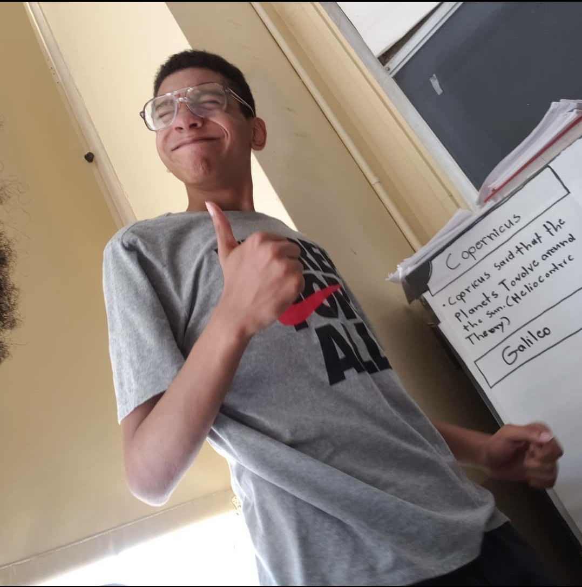
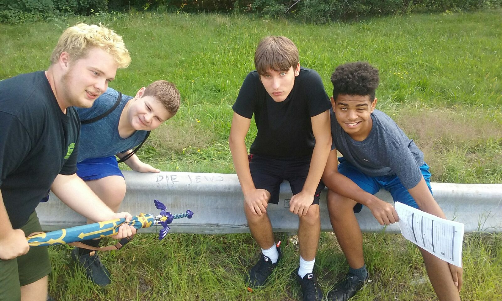

What is Studio Depths All About?
We're a small group of friends with different ideals and skill sets; all coming togetther to make a name for ourselves or maybe even make history. all of us come from different backrounds and all working on the same goals which is to start an game development/design indie company...we came together as Studio Depths
Why The Name Studio Depths?
Tyler, which is me, the owner of this website; chosen this name because this name was the history of this company itself. on a late night of November, he was always told by people he knew to write or type up his ideas that he came up with for games but he never did except for that month. thats when depths Curse's concept was made...his first game idea, and to give respect; he named the company after it.
“We the dream team, the group of friends that know our dreams” - Tyler Marquez
 Why does the CEO of Studio Depths knew he wanted to make games?
He knew to that his life career was to make Video Games was way long ago. Tyler was only 4 years old when he came across video games, unaware of what it was but had a rush everytime he played it. when he had his hands on a controller, it was like going to another world that made everything that wasn't possible...well possible. the first game he's ever played was GTA San Andreas which was a very bad example for a 4 year old child but it is what it is; and it was whatever i guess...parents an i right. from that day i played my first game, i knew that this was the career i wanted for myself then i worked till this day to make it happen; along with others with the same ambitions as i did.
Back to Top